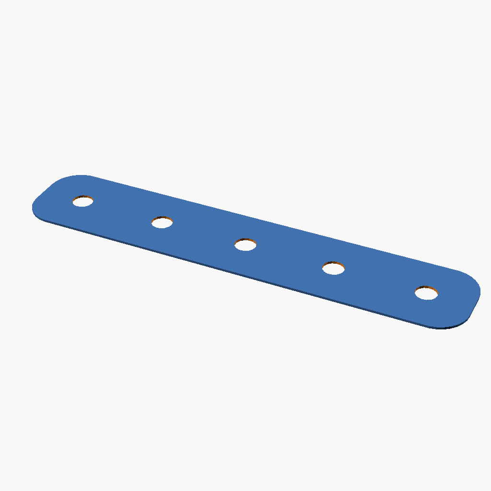
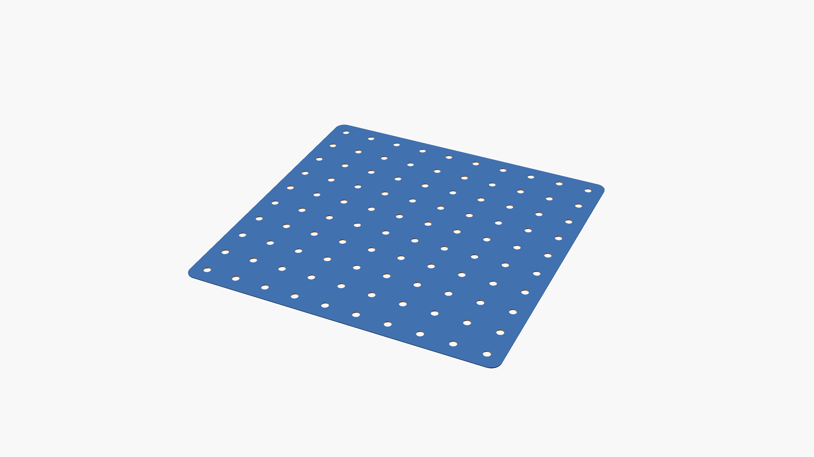
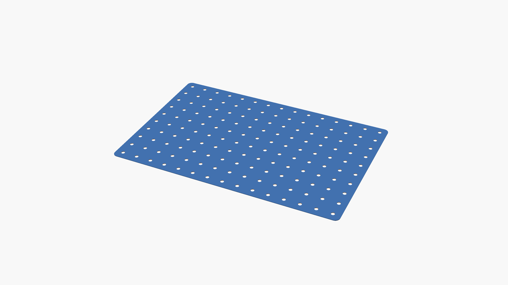
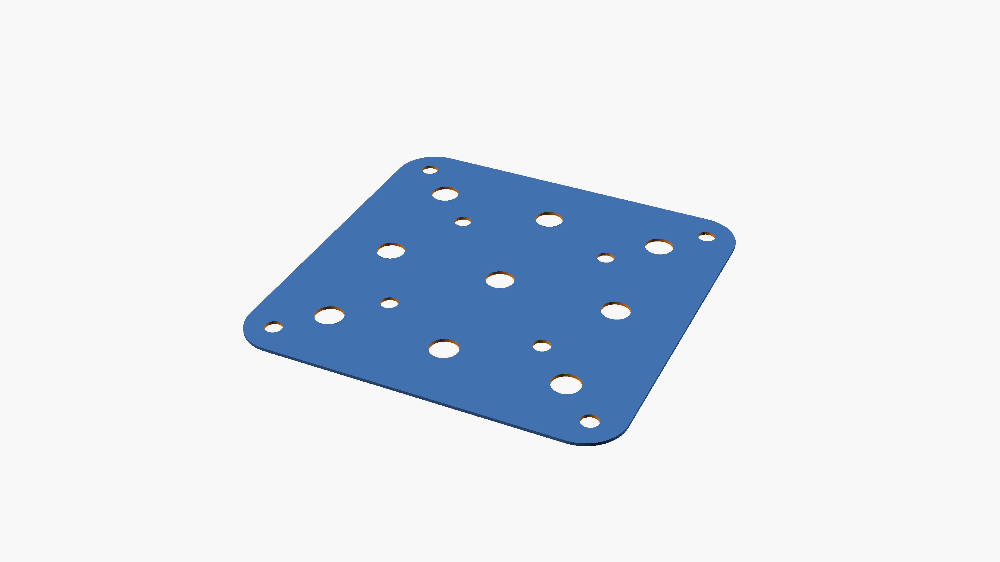
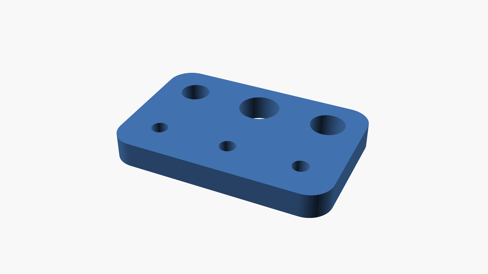
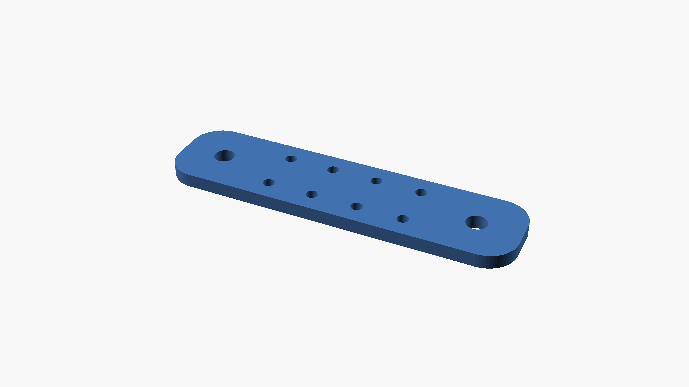
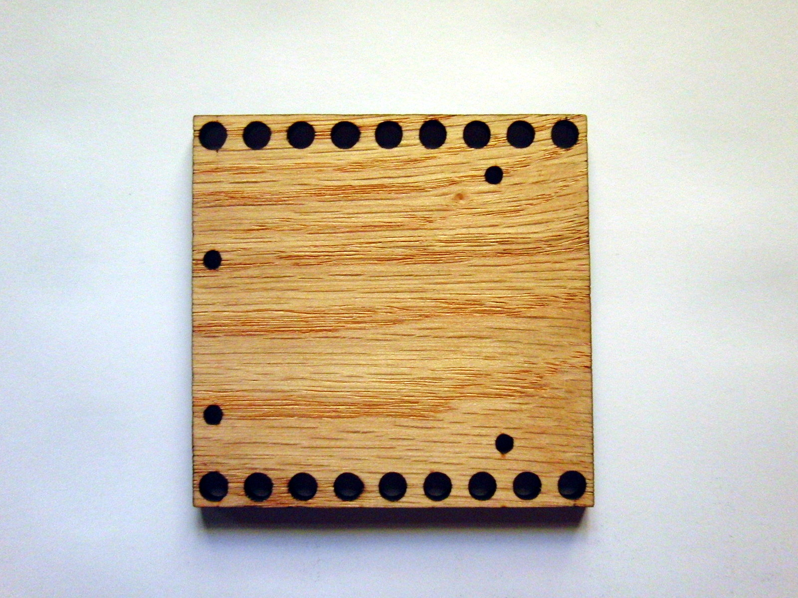
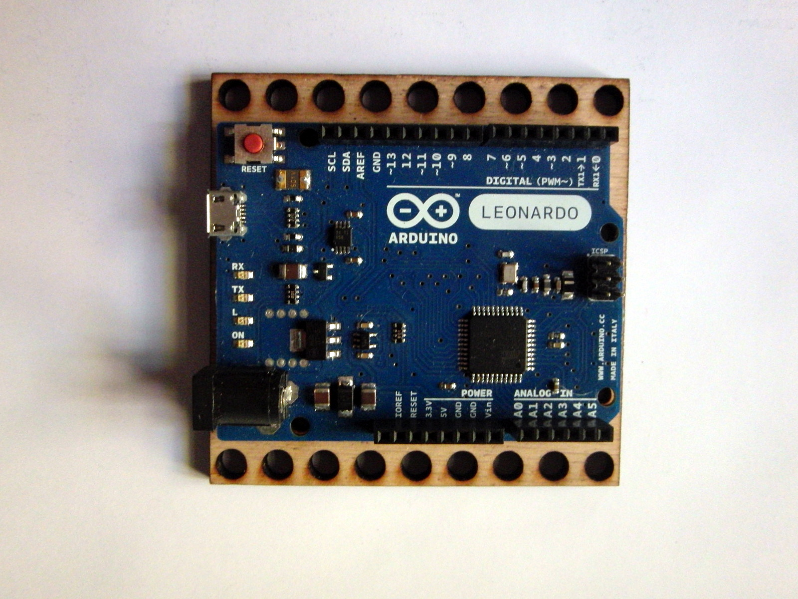
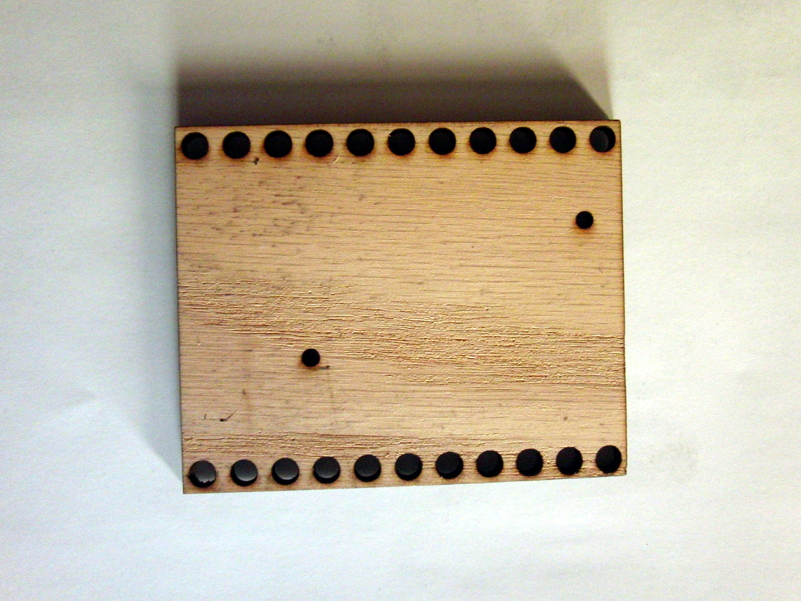
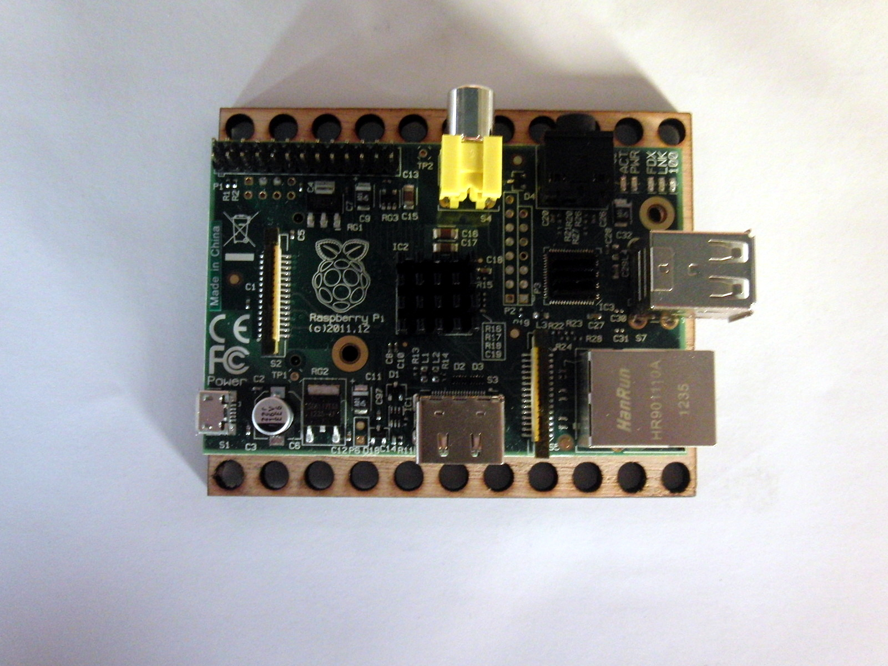

plates revision 8006
^ Parts infobox ^^
| image | Plate-5x5.scad.png |
| designers | [[user:tim|Timothy Schmidt]] |
| date | 2019 |
| vitamins | |
| materials | |
| transformations | |
| lifecycles | |
| tools | [[cnc_routers|CNC routers]], [[drill_presses|Drill presses]], [[saws|Saws]] |
| parts | [[sheets|Sheets]], [[structural_insulated_panels|Structural insulated panels]] |
| techniques | |
| files | |
| suppliers | |
| git | |
Introduction
Many parts do not match the Replimat hole pattern. They are often the most unique and purposeful components of a project which is the reason they are often the easiest part to start building from. Adapter plates can be manufactured with simple tools like a saw and drill for any part with an existing planar mounting holes.
Challenges
Plate thickness should conform to standard frames, bolts, nuts, and washers.
Approaches
Create mounting plates from flat material, which contain the Replimat hole pattern, and a mounting pattern for an associated part. Drilling or cutting multiple overlapping hole patterns into the same plate can allow it to be bolted to several different size frames.









Corner plates
T plates
Electronics mounting plates




Padded plates
- 5x10
- 5x1
Resources
<youtube>2e9lfhmBgYU</youtube>